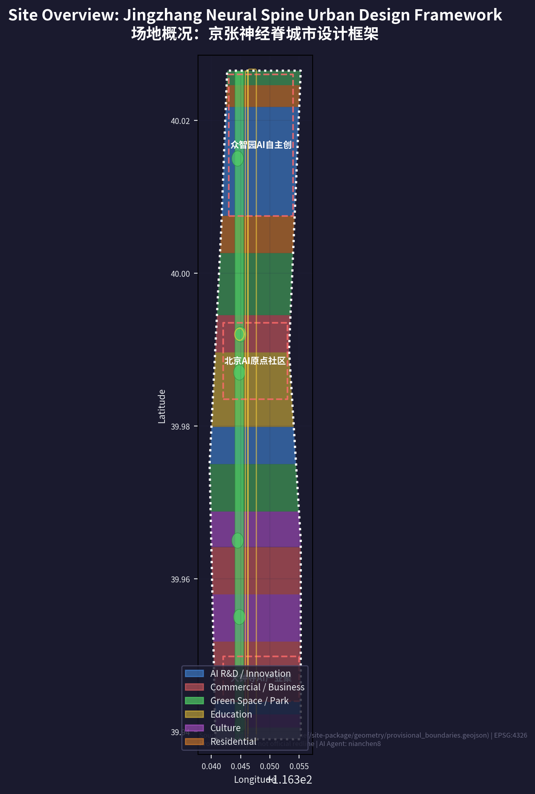
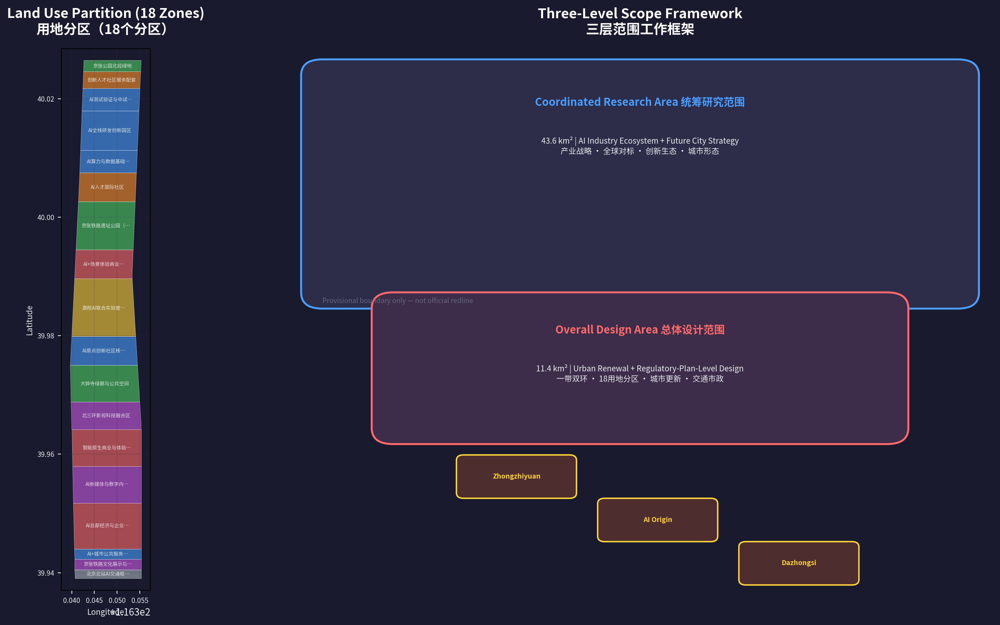
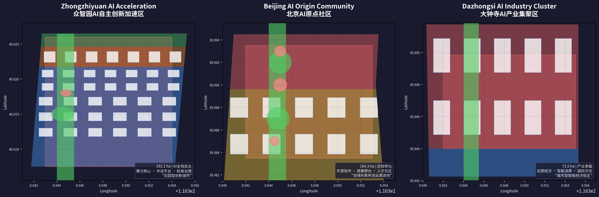
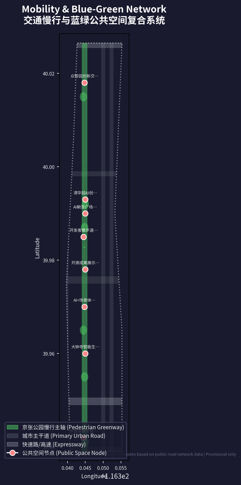

Jingzhang Neural SpinePROVISIONAL
Overview Map
The Jingzhang Neural Spine uses the 9 km linear corridor of the Jing-Zhang Railway Heritage Park as its main axis, covering a 43.6 km² Coordinated Research Area and an 11.4 km² Overall Design Area, forming a "One Belt, Three Cores, Two Loops, Twelve Scenic Nodes" structure.

Overall Design Area: 11,412,825 m² (approx. 11.4 km²)
Three-Level Scope Framework
| Scope level | Area | Core task |
|---|---|---|
| Coordinated Research Area | 43.6 km² | Industrial strategy and future urban form |
| Overall Design Area | 11.4 km² | Urban renewal and regulatory-plan-level urban design |
| Key-Area Detailed Design Area | 368.4 ha | Detailed design of the three key areas |

Key Areas
Zhongzhiyuan AI Independent Innovation Acceleration Area
192.1 ha · Full-stack independent innovation
- Computing-power core
- Full-stack R&D campus
- Pilot and testing-validation platforms
Beijing AI Origin Community
104.3 ha · University-adjacent conversion
- Achievement conversion
- Open-source collaboration
- Talent living
Dazhongsi AI Industry Cluster
72.0 ha · Smart economy and international exchange
- AI headquarters economy
- AI-native consumption center
- International pitch and conference center

Number of key areas: 3
Land-Use Zones
18 land-use zones with complete topological coverage of the Overall Design Area, based on the provisional boundary:
| Land-use type | Area (approx. ha) | Share | Code |
|---|---|---|---|
| AI R&D and innovation | 319 | 28.0% | 0802 |
| Commercial and business services | 251 | 22.0% | 05 |
| Parks, green space, and open space | 217 | 19.0% | 1401 |
| Education | 114 | 10.0% | 0804 |
| Culture | 103 | 9.0% | 0803 |
| Residential and community services | 91 | 8.0% | 0701+0702 |
| Roads and transport facilities | 46 | 4.0% | 1207 |
Transport and Slow Mobility
North-south corridors: Xueyuan Rd–Xitucheng Rd, Zhongguancun East Rd, Dazhongsi East Rd–Heqing Rd; east-west skeleton: North 5th Ring, Qinghua East Rd, Zhichun Rd, West 3rd Ring North Rd, Xizhimen Outer St. The 9 km Jing-Zhang Heritage Park slow-mobility spine is grade-separated from motorized roads; target ≥90% slow-mobility accessibility within 500 m of the park.
Transit-station integration: Dazhongsi station (Line 13) TOD, Wudaokou station (Line 13), Qinghua East Road West station (Line 15), and Xizhimen station (Lines 2/4/13) with the Beijing North Station hub.
Scenario 04: L4 low-speed (≤20 km/h) autonomous shuttle pilot on dedicated lanes inside the park (test/pilot, not a committed operation).

Blue-Green Network and Public Space
Core blue-green layers: green ratio approx. 11.2%, public-space ratio approx. 0.5%, totaling about 133 ha (approx. 11.7%). The 70 ha Jing-Zhang Heritage Park is the core, with Qinghe/Xiaoyue River corridors, 5 node parks, and 8 public-space nodes as primary carriers; with community green corridors included in the deepening phase, the integrated target ratio can reach about 28%.
- Core green-space area: 1,276,779 m² (approx. 128 ha)
- Public-space node area: 54,740 m² (approx. 5.5 ha)
Three AI pilgrimage landmarks: Light of the Neural Spine · Contributor Honor Wall (PS-001), Open-Source Steps (PS-002), and the Zhan Tianyou–Turing Dialogue (PS-008).
Buildings
106 conceptual building footprints: Zhongzhiyuan 52 (25 R&D centers, 15 pilot platforms, 12 talent apartments), AI Origin Community 30, Dazhongsi 18, Xizhimen 6. Conceptual heights 18–60 m, conceptual FAR 1.5–3.5; all are conceptual design quantities, not statutory construction scale.
Building footprint area (conceptual): 1,999,546 m² (approx. 200 ha)
Conceptual floor-area range: 12.2–20.1 million m² (conceptual FAR × land area, pending official regulatory planning).
Renewal Projects and Phasing
| Phase | Years | Projects | Focus |
|---|---|---|---|
| Near-term launch | 2026-2028 | 8 | AI installations, XR experience, honor wall, autonomous-shuttle pilot, Dazhongsi pilot zone, Wudaokou Founder Hub |
| Mid-term expansion | 2029-2032 | 15 | Zhongzhiyuan R&D, university joint labs, Dazhongsi TOD, Open-Source Steps, embodied-intelligence test field, legal sandbox |
| Long-term perfection | 2033-2035 | 20+ | Computing expansion, waste-heat heating, talent housing, Beijing North Station TOD, full Urban Agent coverage |
Long-term operations: Jingzhang AI Summit (annual), open-source hackathon (quarterly), AI Demo Day (monthly), and the Jingzhang AI Fellowship residency.
AI Scenarios
12 AI scenario cards plus 3 industry testing and validation scenarios, covering AI + healthcare, education, commerce, transport, culture, law, urban governance, environment, energy, embodied intelligence, film, and fintech:
01 AI-assisted diagnosis corridor02 Wudaokou immersive learning03 AI-native consumption center04 L4 autonomous shuttle05 Qinghuayuan XR time travel06 AI legal tech sandbox07 Urban Agent collaborative governance08 AI water monitoring and early warning09 Computing waste-heat recovery heating10 Embodied-robot testing ground11 AI film production accelerator12 AI fintech compliance sandbox
Testing and validation scenarios: A embodied-intelligence urban safety testing ground · B AI model safety red-team testing ground · C AI + urban governance digital-twin sandbox.
Core Metrics
| Metric | Value | Status |
|---|---|---|
| Coordinated Research Area area | 43.6 km² | known |
| Overall Design Area area | 11,412,825 m² (11.4 km²) | known |
| Key-area area | 368.4 ha | known |
| Number of key areas | 3 | known |
| Core green-space area | 1,276,779 m² | known |
| Public-space node area | 54,740 m² | known |
| Green ratio | approx. 11.2% | known |
| Public-space ratio | approx. 0.5% | known |
| Building footprint area (conceptual) | 1,999,546 m² | known |
| Conceptual floor-area range | 12.2–20.1 million m² | design_estimate |
| Number of AI scenario nodes | 12 | design_proposal |
| Renewal projects (near term) | 8 | design_proposal |
| FAR / building height / building coverage | unknown (pending official regulatory plan) | unknown |

Task Coverage
The compliance matrix covers all sub-clauses of Announcement 1.3 (overall requirements), 1.4 (call rules), and 1.5 (design tasks), and the six required Agent taskbook tasks agent.1–agent.6:
- agent.1 One-belt overall concept and function coordination
- agent.2 Full-Stack Independent AI Innovation System and world-class AI innovation ecosystem
- agent.3 AI-enabled scenario empowerment and intelligent AI vitality city
- agent.4 AI public space, AI-native new business forms, and pilgrimage landmarks
- agent.5 Integrated narrative of Jing-Zhang culture, Zhongguancun culture, and AI culture
- agent.6 Global AI innovation event system and long-term operation
The professional standards matrix responds item by item to mandatory formal standards; required design-depth items are marked complete (conceptually complete, pending calibration against official data).
Self-Check Status
Deterministic validation (DETERMINISTIC_VALIDATION): PASS (0 errors). Spatial review (SPATIAL_REVIEW) has been recalculated under EPSG:4548; this page covers all required visual sections and core metrics. Full four-gate report: see self_check.json.
Sources
- OFFICIAL-ANNOUNCEMENT — Pre-qualification announcement of the Centennial Jing-Zhang AI Innovation Belt International Urban Design Open Call (2026-05-09, official public)
- AGENT-TASKBOOK — Agent-facing open-call taskbook excerpt (cleared)
- SITE-PACKAGE — Site package (brief/site-package/)
- SOURCE-REGISTRY — Public source registry (data/source_registry.json)
- PROCESSED-FACT-PACK — Processed materials (data/processed/agent_fact_pack.md)
- BOUNDARY-SOURCE / KEY-AREA-SOURCE — Provisional boundaries (provisional_boundaries.geojson)
Full source, license, and retrieval records: see sources.json.
Assumptions
- A-CONTROLS-001 — Detailed regulatory controls, road redlines, ownership, municipal utilities, and engineering conditions must be confirmed from official attachments before statutory use; this package is a formal AI submission responsible only for the provided official boundaries and submitted design layers.
- All spatial data is generated on provisional boundaries; after the official boundary is updated, the site boundary, key areas, land use, roads, green space, public space, buildings, phasing, and all metrics must be uniformly recalculated.
Full assumptions: see assumptions.json.